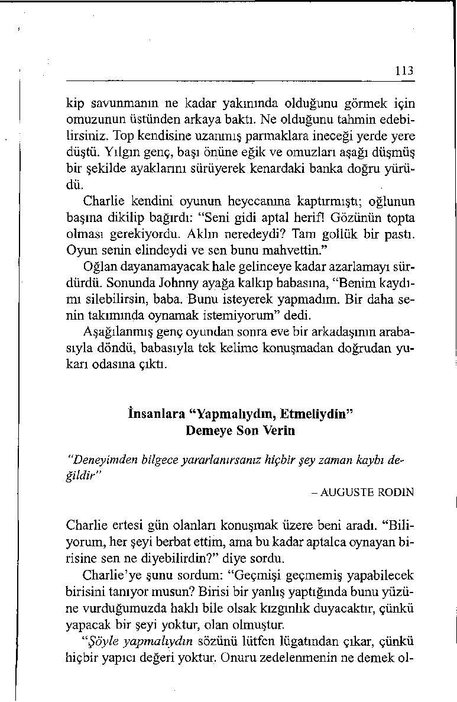

SÖZLER
GEREKEN SÖZLER
Geçmişe ve hatalara yönelirsi Geleceğe yönelir ve hatayı giniz ve bunun hiçbir yaran oldermeye çalışırsınız, bunun yamaz.
pıcı bir değeri olur.
“Söz verdiğin halde ödemeyi
“Kartımızı kullanabilmem için
niçin yapmadın? ”
kredi kartı borcumuzu bugün
ödeyebilir misin? ”
X
Gerekçeler ararsınız: Ödemeyi
Bundan böyle ne yapılabilete—
acaba niçin yapmadı?
ği konusuna bakarsınız.
“Zamanım yoktu ne demek?
“Gelecekte ödemeyi geciktire Parayı geçen hafta yatırman
cek olursak, kredi kartımızı
gerekiyordu? "
kullanmamam için beni haberdar eder misin? "
Suçun kimde olduğu konusun Elinizi kaldırarak husumete
da atışırsınız.
son verir ve “Bunu yapmaya “Herkesin önünde rezil olma lım” dersiniz.
mın sorumlusu sensin. Önce
“Birbirimizi suçlamanın bir
bana sorsaydın, ne demek? Nefaydası yok. Bunun yerine böyreden bilebilirdim ki? "
le bir durumla bir daha karşılaşmamamız için ne yapmamız
gerektiğini konuşalım.”
Hatanın nedenleri üzerine mü Sonuçlan ve ikinizce de arzu
nakaşa edersiniz.
edilen davranışı tartışırsınız.
“İşinin çok olması bir bahane
"Aynı taraftayız. İkimiz de
olamaz.”
hesabımızın sorunsuz olmasını
istiyoruz."
İkinci Kısım
Unutulacak Sözler
Kullanılacak Sözler
“Taş ve sopalar kemiklerimi kırabilir,
ama sözler kalbimi kırar.”
- ROBERT FULGHUM
Onuncu Bölüm
Kabul Edin, Münakaşaya Girmeyin
Robert Fulghum’un da belirttiği gibi, çocuk şarkısındaki o,
“Taş ve sopalar kemiklerimi kırabilir, ama sözler hiçbir zaman
beni yaralayamaz” dizesinin gerçekle pek ilgisi yoktur. Sözler
yaralayabilir. Aslında belli sözler insanların kendilerini azarlanmış, utanmış, yargılanmış ya da reddedilmiş hissetmesine neden olur. O zaman da ona göre tepki gösterirler.
Kitabın bu kısmındaki bölümler silah işlevi gören sözcüklerle ilgilidir. Silah; savunma ya da saldırı savaşında kullanılan bir alet, mücadelede başvurulan bir araç demektir. Düşmanca tepkilere ve söz savaşma yol açacağı için kavgacı sözcükleri
kullanmak istemezsiniz.
Atölye çalışmalarımızda bu bölümü “Unutulacak Sözler,
Kullanılacak Sözler” olarak adlandırıyoruz. Atölyelere katılan
binlerce kişi kavgacı cümleler yerine dostça cümleler kullanmanın günlük iletişimlerinde - evde, işyerinde ve sosyal çevrelerinde - muazzam bir fark yarattığını söylüyor.
106
Yardımcı Olan Sözler ve Yaralayan Sözler
“Sözcükler, ipte asılı çamaşırlar gibi aklın rüzgârlarında uçuşurlar. ”
- RAMESHWAR DAS
Geçenlerde bir araba kiralarken bir kelimenin yol açabileceği
tahribatı belirgin şekilde gözler önüne seren bir durumla kar şılaştım.
Kiralama bürosuna gelen bir kadın, “Adım Evelyn Jones,
bir Ford Mustang ayırtmıştım” dedi. Görevli kayıtlarına bakıp,
“Evet Bayan Jones, rezervasyonunuz burada” diye yanıt verdi,
sonra sesini biraz indirerek ekledi: “Ama şu anda elimizde hiç
Ford Mustang yok.”
Kadın şaşkınlık içinde, “Nasıl olur? Bir Mustang ayırtmak
için kaç hafta önce aramıştım” dedi. Görevli cevap verdi:
“Ayırtmış olduğunuzu görüyorum, ama elimizdekilerin hepsini bu sabah kiralamış bulunuyoruz.”
Müşterisi hiç de mutlu değildi. “Anlamıyorum. Zaman ayırıp telefon ettim, siz de tamam dediniz.”
“Biliyorum, ama bu sabah yeni bir arkadaş görevliydi ve
rezervasyon listesine bakmayı unutmuş.”
Ayrıldığımda münakaşaya devam ediyorlardı. Niçin? Araba
kiralama görevlisi sürekli ama sözcüğünü kullanıyordu. Bu,
bir önce söylenen sözü inkâr eden ve hemen bir karşıtlık ilişkisi doğuran bir sözcüktür. Ama sözel bir balyozdur ve tartışmaları münakaşaya dönüştürür.
Açıklamaları Bağlantılandırmak mı, İptal Etmek mi?
“Balyozla ilişki inşa edemezsiniz.”
- ANONİM
Konuşmalarda harika bir barış ortamının nasıl inşa edilebileceğini öğrenmek ister misiniz?
107
Bugünden itibaren yıkıcı ama sözcüğünün yerine yapıcı ve
sözcüğünü kullanmaya başlayın. Bu sözcüğün güzelliği, bir
önce söylenen sözü bloke etmek yerine onun üzerine inşa etmesindedir. Tartışmaları münakaşaya dönüştürmek yerine ilerletir.
Yukarıdaki örnekteki görevli şöyle deseydi nazikçe durumu
düzeltebilirdi: “Haklısınız Bayan Jones. Bir Ford Mustang almanız gerekir ve ne yazık ki şu anda elimizde bir Mustang yok ve ben size daha üst bir model sunacağım...”
Bunu biraz düşünün. Ama sözcüğü genellikle olumsuz bir
haberden önce gelmez mi? “Bunu iyi hazırlamışsın, ama...”
“Sadece on beş dakika alır demiştik, ama...” Bu sözcük hemen
bir Ooo! tepkisi doğurur, çünkü dinleyici arzu etmediği bir şeyi duymak üzere olduğunu anlar. “Bu krediye ne kadar çok ihtiyacınız olduğunu anlıyorum, ama...” demek “Krediyi alamayacaksınız” anlamına gelir, insanlar ama ’dan önce söylenenleri dikkate almazlar, çünkü kendilerini asıl etkileyecek olanın sözcüğün ardından gelecek şey olduğunu bilirler. Ama daha önce söylenenleri iptal eder.
Ve sözcüğü ise her iki açıklamayı da, tamamen birbirlerine
ters bile olsalar, ortada bırakır. “Bunu iyi hazırlamışsın ve lütfen... soran bir cümle daha ekler misin?” “Sadece on beş dakika alır demiştik ve maalesef daha uzun sürüyor. Bilgisayarlarımız kısa süre içinde açılacak ve o zaman... yapabiliriz” “Kredi talebinizi onaylamaktan yanayım ve bunun için vergi kayıtlarınızı getirebilir misiniz?”
Ama Siler, Ve Kabul Eder
“Elbette bağırıyorum. Çünkü yanlışım! ”
- LESL IE C H A R L E S
Bu alıntı şu şekilde değiştirilebilir: “Elbette bağırıyorum.
Çünkü beni yanlış yapan sensin!” Ama sözcüğü kişinin biraz
108
önce söylediği şeyin önemini en aza indirir. “Bu iyi bir nokta,
ama...” demek, aslında “Sen yanılıyorsun” demektir. Açıklaması böyle indirime tabi tutulan kişi muhtemelen protesto edecektir.
Bir İngilizce öğretmeni bunun kendi açısından ne kadar
çarpıcı bir keşif olduğunu şöyle anlatıyor.
Yirmi yıldır öğretmenlik yapıyorum. Hep “ama”
sözcüğünün cümleleri birleştiren bir bağlaç olduğunu
öğrettim. Sizse bana bunun cümleleri birleştirmediğini tersine çatıştırdığını, uyumsuzlaştırdığım gösterdiniz. “Ama” açıklamaları birbirine bağlamıyor, aralarında çatışma çıkanyor, çünkü önce söylenenle sonra söylenene eşit değer tanımıyor.
Sınıfta bu sözcüğün nasıl kullanıldığını inceledik
ve bütün öğrenciler aynı sonuca vardı: “Ama” kötü
haber demektir. “Arabayı almak istediğini biliyorum,
ama...” “Seni de takıma almak isterdim, ama...” “Sınavı neredeyse geçiyordun, ama...” “Seninle konsere gitmek istiyorum, ama...”
Öğrencilerimle birlikte “Kötü Haber Ama”dan kurtulmaya karar verdik. Haftalık toplantımızda konuyu meslektaşlarıma da açtım. Hepsi bu “devrimci yakla şımı” müfredatlarına katmayı kabul ettiler. Dil öğretme görevimizin imla, telaffuz ve gramerden ibaret olmadığına inanıyorum. Yapıcı iletişim kurma çabalarımızı sabote etmekten çok destekleyecek sözcükleri seçmeyi de kapsamalıdır.
Görüş Farklılığı mı, Anlaşmazlık mı?
"Birinci sın ıf bir zekânın göstergesi, iki karşıt görüşü aynı anda
akılda tutabilme yeteneğidir."
- F. SCOTT FITZGERALD
109
Fitzgerald’ın gözleminin değişik bir biçimiyle şöyle de diyebiliriz: Birinci sınıf bir ilişkinin göstergesi, tarafların hasım haline gelmeden karşıt görüşleri savunabilme yeteneğine sahip olmasıdır. Bu ancak taraflar ve sözcüğünü kullandığı sürece
mümkündür. Birisi ama sözcüğünü kullandığı anda, bu “benim yolum seninkinden iyidir ve senin yolun yanlıştır” anlamına gelir.
Bazen atölye çalışmalarımızda katılımcılardan eşleşmelerini ve bir taraf yalnız yaşamanın iyi olduğunu savunurken di ğer tarafın da evliliğin en iyi yol olduğunu ileri sürmesini istiyorum. “İdeal olanı tartışın ve diğer tarafı görüşünü değiştirmeye ikna etmeye çalışın” diyorum. Tipik bir münazara şöyle cereyan ediyor: “Sürekli aynı kişiyle birlikte yaşamayı nasıl düşünebilirsin?
Bu çok sıkıcı değil mi? Tek başına yaşadığında canın kimle isterse istediğin zaman istediğin yere gitmede özgür olursun.”
“İyi ama, bir süre sonra bunun tadı kalmaz. Güzel olan, gece eve gelsen de gelmesen de seni düşünen birisinin olduğunu bilmendir.”
“Ama evlilik tuzağa tutulmuş olduğun anlamına gelir. Kurtulmaya çalışırsan karşına ipotekler, faturalar ve nafaka çıkar.”
“Olabilir, ama senin yuppi yaşam tarzın uçarılıktan ibaret.
Oysa hayat her akşam bir başka partide olmaktan daha fazla
bir şeydir.”
Beş dakika sonra alıştırmayı kesip katılımcılardan düşüncelerini alırım. Genellikle, rol yapıyor olmalarına rağmen tartışma sürecinde giderek eşlerine öfke duymaya başladıklarım hissettikleri söylerler. Ben de tartışmada ama sözcüğünün kaç kere geçtiğini sorarım. Çoğu hemen her söz aldığında en az bir
kere kullanmış olduğunu hatırlar. Farkında olmadan, kendi görüşlerini açıklamadan önce diğer tarafın söylediği şeyi reddetmektedirler. Ama sözcüğünü kullanmanın tarafların birbirine kulak asmadığı pingpong maçına benzer bir konuşma oluşturduğunu fark ederler.
110
Daha sonra kendilerinden ama’ mn yerine ve’yi geçirerek
tartışmaya devam etmelerini isterim. Özel bir çaba göstermeksizin konuşmalarının giderek daha nazikleştiğini, gerilimin kalktığını görürler.
“Haklısın, kendi başına olmak ve arzu ettiğini canının istediği an yapabilmek hoştur ve senin dünyadaki en büyük şey olduğunu düşünen çocuklara sahip olmak da hoştur.”
“Yerleşik olma ve hayatında bir süreklilik olması ihtiyacını
anlıyorum ve sen başıboş ve özgür olmayı tercih etmez misin?”
Aradaki fark katılımcıları hayran bırakmaktadır. Karşı tarafa “kendi yolunun yanlış olduğunu” göstermeye çalışmak yerine, birbirlerinin inançlarını kabul etmeye ve saygıyla yaklaşmaya başlamaktadırlar.
Birisiyle bir anlaşmazlığınız varsa, muhtemelen her ikiniz
de ama sözcüğünü kullanıyorsunuzdur. Ama çatışmayı kışkırtır, ve önler. Ama öfkelendirir, ve yatıştırır. Bundan böyle söylenenleri birleştirmek için ve’yi kullanın. O zaman, karşıt fikirlerinizi konuşmayı münazaraya çevirmeden tartışabilirsiniz.
111
____________ ;
MÜNAKAŞAYA GİRMEK YERİNE
KABUL ETMEK İÇİN EYLEM PLANI
Siz eve köpek almak istiyorsunuz, eşiniz ise buna karşı. Bu aranızda hararetli bir tartışma haline gelmiş ve siz köpek sahibi olmanın iyi bir fikir olduğunu kanıtlamak için son bir çaba göstermeye karar vermiş bulunuyorsunuz. Tartışmayı nasıl götürürsünüz?
UNUTMANIZ GEREKEN
KULLANMANIZ
SÖZLER
GEREKEN SÖZLER
Olumsuz bir tepki doğuran si Konuşmayı yapıcı kılmak için
lah sözcükler kullanırsınız.
olumlu cümleler kullanırsınız.
“Köpek sevmediğini biliyorum,
“Köpek istemediğinin farkınama ben seviyorum.”
dayım ve buna önem veriyorum.”
Hemen bir karşılık ilişkisi ya Eşinizin bakış açısını kabul
ratan ama sözcüğünü kullanıreden ve sözcüğünü kullanırsısınız.
nız.
“Uğraşmak istemediğini söylü “Onu dolaşmaya çıkaracak zayorsun, ama köpekten sorumlu
manın olmadığını biliyorum ve
olacak olan benim."
bunu ben üstleneceğim.”
Eşinizin söylediklerini iptal et Tartışmayı ilerleten ve söyletiği için tartışmayı kilitleyen
nenleri birleştiren ve sözcüğü ama sözcüğünü kullanmayı
nü kullanmayı sürdürürsünüz.
sürdürürsünüz.
“Ne hissettiğini anlıyorum ve
“Dediğini anlıyorum, ama bu
sanıyorum bu işi endişelerini
konuda niçin böyle inat ettiğini
boşa çıkaracak şekilde yürüteanlamıyorum."
biliriz."
Eşinizin bakış açısını ortadan
Eşinizin bakış açısını kabul
kaldıran ama sözcüğünü kuleden ve sözcüğünü kullanırsılanmayı sürdürürsünüz.
nız.
“Veteriner faturalarının pahalı
“Dediğini anlıyorum ve sağlıkolduğunu söylüyorsun, ama
lı kalması için aşılarını zamahastalanacak değil, kendine
nında yaptırmalıyız diye düşüdert etme."
nüyorum."
Ii
On Birinci Bölüm
Eleştirmenlik Değil Koçluk Yapın
Birisi bir yanlış yaptığında ne yaparsınız? Ne yapması gerektiğini söyleyerek düzeltir misiniz?
Aşağıda size, yapmak gerekir sözcüğünün tahripkâr etkisiyle alternatif bir sözcük kullanma arasındaki muazzam farkı gözler önüne seren bir öykü sunuyorum.
Dostum Charlie kentteki lisenin futbol koçudur. Birkaç yıl
önce takımı lig şampiyonluğu için bir başka takımla iddiaya
girmişti. Ligin son maçını tesadüfen bu iddialaşılan takımla
oynadılar. Heyecan dolu maçta dördüncü çeyrekte durum 14—
14’dü. Top Charlie’nin takımmdaydı ve hücuma geçmişlerdi.
Arka dörtlüden uzun bir pas geldi, en iyi yakalayıcıları (Charlie’nin oğlu Johnny) topu yakalamak için yan çizgiden hızla koşuyordu.
Tam topu tutmak üzereyken, kendisine yüzlerce kez hiçbir
zaman yapmaması gerektiği söylenmiş olan bir şeyi yaptı; ra 
113
kip savunmanın ne kadar yakınında olduğunu görmek için
omuzunun üstünden arkaya baktı. Ne olduğunu tahmin edebilirsiniz. Top kendisine uzanmış parmaklara ineceği yerde yere düştü. Yılgın genç, başı önüne eğik ve omuzları aşağı düşmüş
bir şekilde ayaklarını sürüyerek kenardaki banka doğru yürüdü.
Charlie kendini oyunun heyecanına kaptırmıştı; oğlunun
başına dikilip bağırdı: “Seni gidi aptal herif! Gözünün topta
olması gerekiyordu. Aklın neredeydi? Tam gollük bir pastı.
Oyun senin elindeydi ve sen bunu mahvettin.”
Oğlan dayanamayacak hale gelinceye kadar azarlamayı sürdürdü. Sonunda Johnny ayağa kalkıp babasına, “Benim kaydımı silebilirsin, baba. Bunu isteyerek yapmadım. Bir daha senin takımında oynamak istemiyorum” dedi.
Aşağılanmış genç oyundan sonra eve bir arkadaşının arabasıyla döndü, babasıyla tek kelime konuşmadan doğrudan yukarı odasına çıktı.
İnsanlara “Yapmalıydın, Etmeliydin”